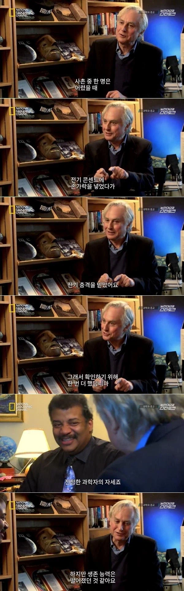
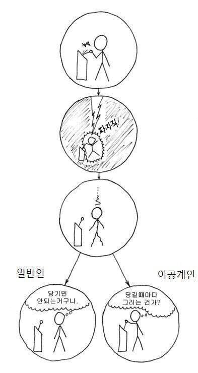

마법과 과학의 차이는 재현성이다.
여러번 반복할 수 있다면 그건 과학이 될 수 있다.
좋은글 추
캬
그럼 해리포터는 마법사가 아니라 과학자였던거임?
마법학도 마력으로 물리력을 구현하는 거라 과학의 하위카테고리에 들어가긴함
중국 저자 논문은 마치 마법과 같구나
따라하면 재현이 안돼
즉 같은 인풋을 넣어도 매번 다른 아웃풋이 나오는 환각 현상, 나아가 AI는 마법이구나!
사실 AI는 같은 인풋을 넣으면 항상 같은 값이 나오긴 한다....!!

역시 초전도체는 마법이었군
주식 살때마다 떨어지는데 과학인가?
팔때마다 오르는거도
고전파군요
니가 계속 해보니까 항상 반복되던현상이 확율적으로 나옴
도람푸햄 두번 된거 보면 과학이였네
고로 자위는 과학이다
손으로 당길때만? 줄을 잡아서 당기면? 다른 사람이 당기면? 동물이 당기면? 차폐상태에서 당기면?
박사논문까지 가능하겠군
전기는 어디서 오는거지?
자가 발전인가?
이래서 과학자는 수가 적구나
감전당해보면 도저히 한번더 못하겠던데 ㅋㅋㅋㅋㅋ
나도 5학년때 학교에서 콘센트만드는거 했는데
플라스틱 커버 안씌우고 꽂았더니 온몸이 찌릿하더라고
기분 좋아서 한번 더 꽂음
너는 그냥 변태인거고 ㅋㅋㅋㅋㅋ
진짜 그런느낌 느껴본적이 없음
섹스랑은 뭔가 다른 그 짜릿함이 있는데..
전기딸
물리학 박사딴 친구에게 저짤 보여주니 자기도 그렇다더랔ㅋㅋㅋㅋㅋ
실험물리학자일 가능성 99퍼
Survival instincts of french fries 😂
똥은 무슨 맛일까?
냄세는 똥 분자가 니 코로 들어간거임. 아마 니가 생각한 그맛일듯.
ㅋㅋㅋㅋㅋㅋ
나도 플러스 마이너스 극 한번씩 만지고 오 전기 안오네
동시에 만지면 배운대로 감점되겟지? 하고 220볼트로 감전당함 히히
옛날엔 비오는날에 전봇대만져도 전기오던데
두번만 당기면 전기오는건가? 여러번당겨도 전기가 오나?